摘录自：https://www.pdai.tech/md/db/nosql-redis/db-redis-data-types.html
[toc]
Redis概念和基础
Redis是一种支持key-value等多种数据结构的存储系统。可用于缓存、事件发布或订阅，高速队列等场景
为什么要使用redis
- 读写性能优异
- 读的速度是11 0000次/s,写的速度是8 1000次/s
- 数据类型丰富
- Redis支持二进制案例的 Strings, Lists, Hashes, Sets 及 Ordered Sets 数据类型操作。
- 原子性
- 所有操作都是原子性的，同时支持对几个操作合并后的原子性执行
- 丰富的特性
- 支持
publish/subscribe，通知，key过期等特性
- 支持
- 持久化
- RDB, AOF等持久化方式
- 发布订阅
- Redis支持发布/订阅模式
- 分布式
- Redis Cluster
Redis的使用场景
- 热点数据的缓存
- 限时业务的运用
- 使用
expire命令设置一个键的生存时间，到时间后Redis会删除它。
- 使用
- 计数器相关问题
incrby命令可以实现原子性的递增，可以运用于高并发的秒杀活动、分布式序列号的生成。
- 分布式锁
setnx: set if not exists。就是如果不存在则成功设置缓存同时返回，否则返回0.
- 延时操作
- 自2.8.0之后版本提供
Keyspace Notifications功能，允许客户订阅Pub/Sub频道。在订单生产时，设置一个key，同时设置10分钟后过期，在后台实现一个监听器，监听key的实效。
- 自2.8.0之后版本提供
- 排行榜
SortedSet进行热点数据的排序。
- 点赞、好友等相互关系的存储
- 利用集合的交集、并集、差集等。实现求两人的共同好友功能
- 简单队列
list push和list pop
数据类型：5种基础数据类型详解
Redis所有的key都是字符串。基础数据结构指的是存储值的数据类型。常用为：String, List, Set, Zset, Hash
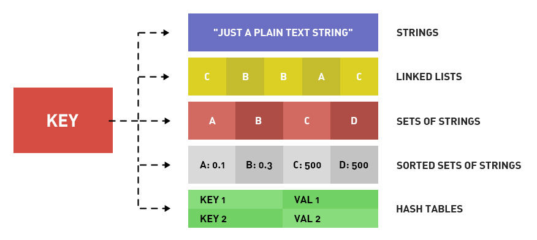
String
String类型是二进制安全的，意思是 redis 的 string 可以包含任何数据。如数字，字符串，jpg图片或者序列化的对象。
命令
| 命令 | 简述 | 使用 |
|---|---|---|
| GET | 获取存储在给定键中的值 | GET name |
| SET | 设置存储在给定键中的值 | SET name value |
| DEL | 删除存储在给定键中的值 | DEL name |
| INCR | 将键存储的值加1 | INCR key |
| DECR | 将键存储的值减1 | DECR key |
| INCRBY | 将键存储的值加上整数 | INCRBY key amount |
| DECRBY | 将键存储的值减去整数 | DECRBY key amount |
使用场景
- 缓存：将图片、视频等信息放到Redis中
- 计数器
- session共享
List
双端链表
最新消息排队、消息队列
命令
著作权归https://pdai.tech所有。 链接：https://www.pdai.tech/md/db/nosql-redis/db-redis-data-types.html
| 命令 | 简述 | 使用 |
|---|---|---|
| RPUSH | 将给定值推入到列表右端 | RPUSH key value |
| LPUSH | 将给定值推入到列表左端 | LPUSH key value |
| RPOP | 从列表的右端弹出一个值，并返回被弹出的值 | RPOP key |
| LPOP | 从列表的左端弹出一个值，并返回被弹出的值 | LPOP key |
| LRANGE | 获取列表在给定范围上的所有值 | LRANGE key 0 -1 |
| LINDEX | 通过索引获取列表中的元素。你也可以使用负数下标，以-1 表示列表的最后一个元素， -2 表示列表的倒数第二个元素，以此类推。 | LINEX key index |
场景
- 微博TimeLIne
- 消息队列
Set
通过哈希表实现，添加、删除、查找的复杂度都是O(1)
命令
| 命令 | 简述 | 使用 |
|---|---|---|
| SADD | 向集合添加一个或多个成员 | SADD key value |
| SCARD | 获取集合的成员数 | SCARD key |
| SMEMBER | 返回集合中的所有成员 | SMEMBER key member |
| SISMEMBER | 判断member元素是否是集合key的成员 | SISMEMBER key member |
场景
- 给用户、消息添加标签
- 点赞、踩等
Hash
field和value的映射表。
命令
| 命令 | 简述 | 使用 |
|---|---|---|
| HSET | 添加键值对 | HSET hash-key sub-key1 value1 |
| HGET | 获取指定散列键的值 | HGET hash-key key1 |
| HGETALL | 获取散列中包含的所有键值对 | HGETALL hash-key |
| HDEL | 如果给定键存在于散列中，那么就移除这个键 | HDEL hash-key sub-key1 |
场景
- 缓存：维护用户信息等比string更直观且节省空间
Zset
每个元素都会关联一个double类型的分数。通过此分数为集合中的成员进行从小到大的排序。通过哈希表实现
命令
| 命令 | 简述 | 使用 |
|---|---|---|
| ZADD | 将一个带有给定分值的成员添加到有序集合里面 | ZADD zset-key 178 member1 |
| ZRANGE | 根据元素在有序集合中所处的位置，从有序集合中获取多个元素 | ZRANGE zset-key 0-1 withccores |
| ZREM | 如果给定元素成员存在于有序集合中，那么就移除这个元素 | ZREM zset-key member1 |
场景
- 排行榜
HyperLogLogs 基数统计
基数
举个例子，A = {1, 2, 3, 4, 5}， B = {3, 5, 6, 7, 9}；那么基数（不重复的元素）= 1, 2, 4, 6, 7, 9； （允许容错，即可以接受一定误差）
用途
省内存的统计各种计数，如：注册ip数，每日访问ip数，在线用户数
有$0.81%$标准错误的近似值
Bitmap
位图数据结构。操作二进制位来进行记录，只有0和1两个状态
Geospatial
推算地理位置的信息：两地之间的距离，方圆几里的人
Stream
5.0中增加，是一个新的强大的支持多播的可持久化的消息队列
消息队列的两种方式
- PUB/SUB：无法持久化
- LPUSH+BRPOP或者Sorted-Set：支持持久化，但是不支持多播、分组消费
消息队列的要求
- 消息的生产
- 消息的消费
- 单播和多播（多对多）
- 阻塞和非阻塞读取
- 消息的有序性
- 消息的持久化
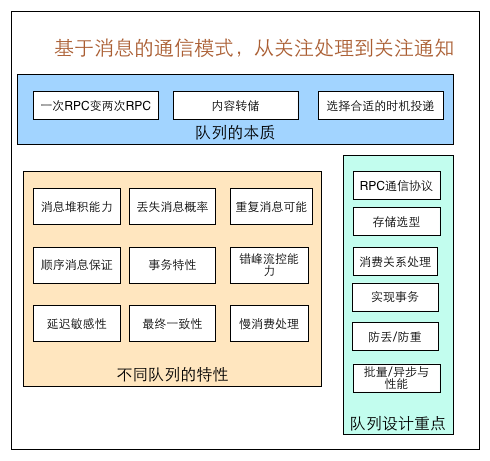
数据结构：对象机制详解
Redis的每种对象都是对象结构(redisObject)与对应编码的数据结构组成
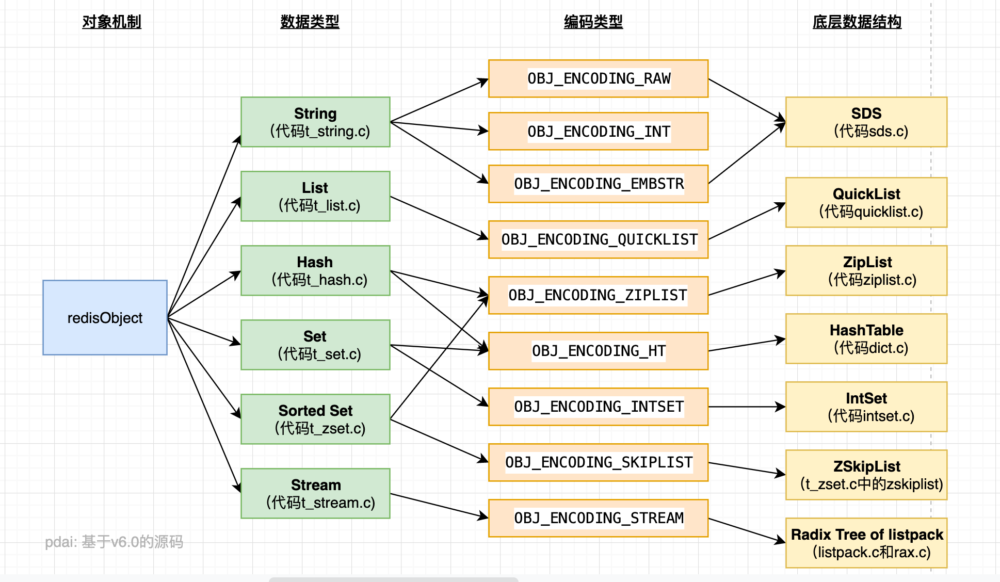
redisObject设计原因
Redis的命令中，对于键所保存的值的类型，键能执行的命令各不相同。所以需要让每个键都带有类型信息，使得程序可以检查键的类型，并为它选择合适的处理方式
redisObject数据结构
|
|
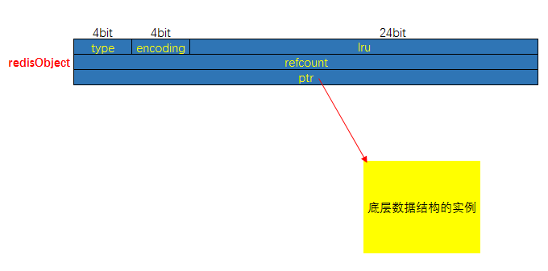
type
|
|
encoding
|
|
ptr
是一个指针，指向实际保存值的数据结构，数据结构由type和encoding属性决定
lru属性
记录了对象最后一次被命令程序访问的时间
空转时长：当前时间减去键的值的对象的lru时间，就是该键的空转时长。
如果服务器打开了maxmemory选项，并且服务器用于回收内存的算法为volatile-lru或者allkeys-lru，那么当服务器占用的内存数超过了maxmemory选项所设置的上限值时，空置时长较高的键会优先被服务器释放，从而回收内存
##类型检查和多态
执行一个处理数据类型命令：
- 根据给定的key，在数据库字典中查找和他对应的redisObject，如果没找到，返回
NULL - 检查redisObject的type属性和执行命令所需的类型是否相符，不相符返回类型错误
- 根据redisObject的encoding属性所指定的编码，选择合适的操作函数来处理底层的操作函数来处理底层的数据结构
- 返回数据结构的操作结果作为命令的返回值
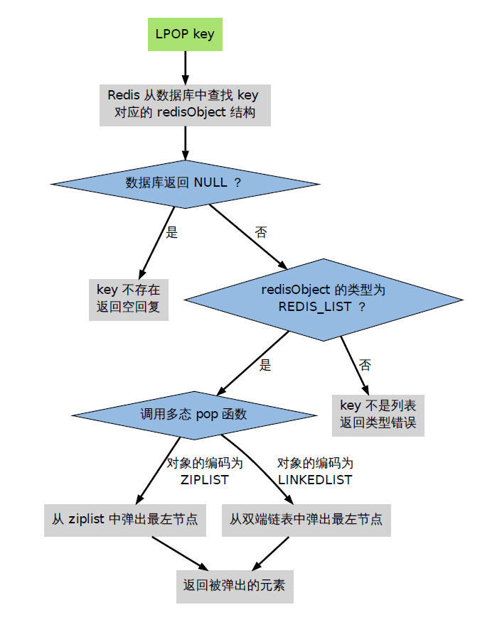
对象共享
一些常见的值会放在一个共享对象中
- 各种命令的返回值。比如成功时返回的OK
- 小于
REDIS_SHARED_INTEGERS(默认值是$10000$)的所有整数，包括$0$在内
引用计数及对象的销毁
- 每个redisObject结构都有一个refcount属性，指示这个对象被引用了多少次
- 新创建一个对象的refcount设置为1
- 当一个对象进行共享时，对应的refcount加1
- 当使用完一个对象后，或者消除对一个对象的引用之后，对应的refcount减1
- 当对象的refcount降至0时，这个redisObject及它引用的数据结构的内存都会被释放
持久化 RDB/AOF
数据库性能有瓶颈，如果是大数据量的恢复，会对数据库带来巨大的压力
RDB持久化
Redis DataBase，快照/内存快照。将当前进程数据生成快照保存到磁盘上的过程
- 手动触发：
save或bgsave- save: 阻塞当前Redis服务器
- bgsave：执行fork操作创建子进程，阻塞只发生在form阶段
- 自动触发：
redis.conf中配置save m n，即在m秒内有n次修改时，自动触发bgsave生成rdb文件- 主从复制时，从节点要从主节点进行全量复制时
- 执行
debug reload命令重新加载Redis时 - 默认情况，执行
shutdown命令时，如果未开启aof持久化
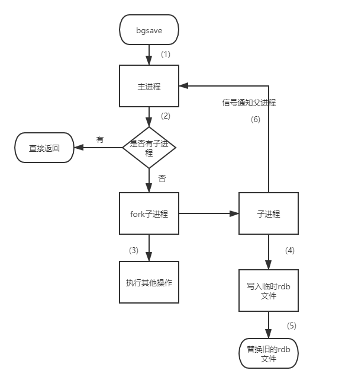 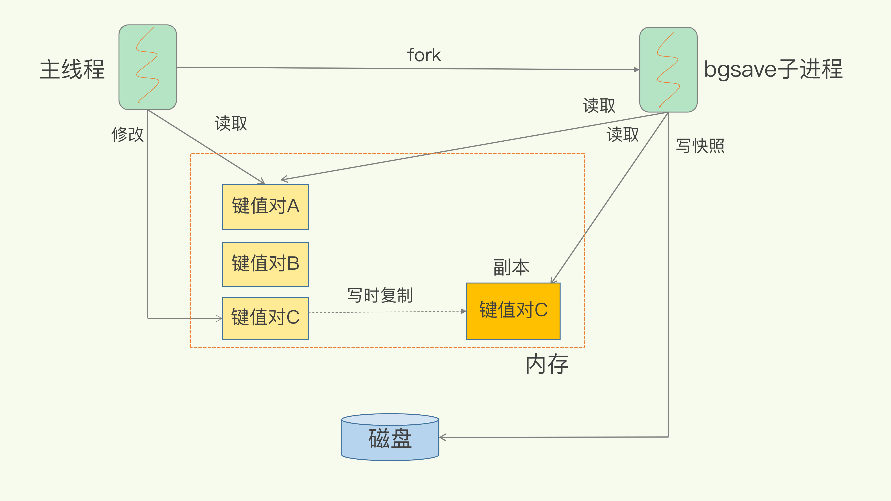
- 优点
- 某个时间节点的快照，默认使用
LZF算法进行压缩，压缩后的文件体积远远濒于内存大小，适用于备份、全量复制等场景 - Redis加载
RDB文件恢复数据要远远快于AOF方式
- 某个时间节点的快照，默认使用
- 缺点
- 实时性不够，无法做到秒级的持久化
- fork子进程属于重量级操作，频繁执行成本较高
- 文件格式是二进制的，没有可读性
- 版本兼容
RDB文件问题
AOF
写后日志：先执行命令，把数据写入内存，然后才记录日志。日志里记录的是收到的每一条命令，以文本形式保存
- 避免额外的检查开销：执行后再记录，不用检查语法
- 不会阻塞当前的写操作
实现
- 命令追加：执行完一个写命令之后，会以协议格式将被执行的写命令追加到服务器的
aof_buf缓冲区 - 文件写入和同步：将
aof_buf写入AOF文件，有三种写回策略- Always：同步写回。每个写命令执行完，立马同步将日志写回磁盘
- Everysec：每隔一秒把缓冲区的内容写入磁盘
- No：操作系统控制的写回，由操作系统决定何时将缓冲区内容写回磁盘
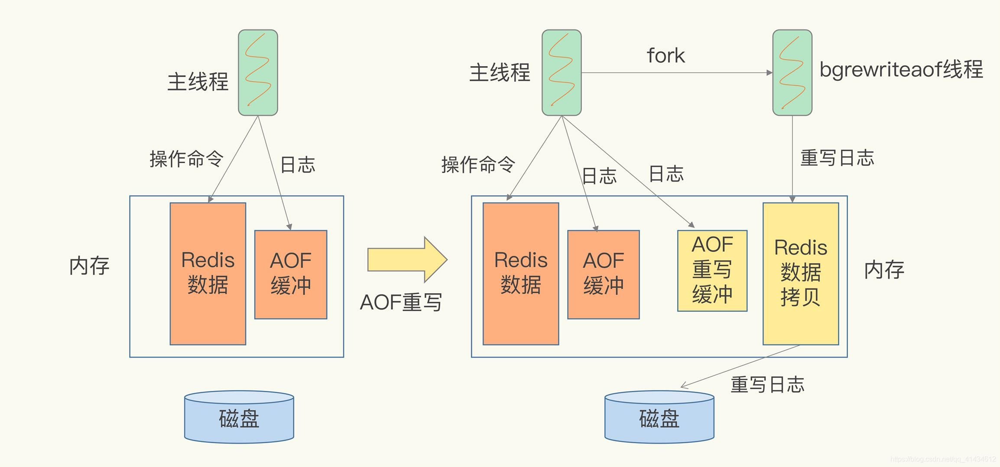
缓存问题
缓存穿透
指缓存和数据库中都没有的数据，用户不断发起请求。导致不存在的数据每次请求都要到存储层去查询，失去了缓存的意义
解决方案
- 接口层增加校验
- 从缓存取不到的数据，在数据库中也没有取到，可以将key-value写为key-null，缓存有效时间设置短点，如30s
- 布隆过滤器。
缓存击穿
缓存中没有但数据库中有的数据（一般是缓存到期），由于并发用户特别多，同时读缓存没读到数据，又同时去数据库取数据，引起数据库压力瞬间增大，造成过大压力
解决方案
- 设置热点数据永远不过期
- 接口限流与熔断、降级。
- 加互斥锁
缓存雪崩
缓存中数据大批量到过期时间，而查询数据量巨大，引起数据库压力过大甚至down机。
缓存击穿指并发查同一条数据，缓存雪崩是不同数据
解决方案
- 缓存数据的过期时间设置随机
- 如果缓存数据库是分布式部署，将热点数据均匀分布在不同的缓存数据库中
- 设置热点数据永远不过期
缓存污染（或满）
缓存中一些只会被访问一次或者几次的数据，被访问完后依然留存在缓存中
一般把缓存容量设置为总数据量的$15% ～ 30%$
缓存淘汰策略
- 不淘汰
- noeviction (v4.0后默认)
- 对设置了过期时间的数据进行淘汰
- 随机：volatile-random
- ttl: volatile-ttl。过期时间排序，越早过期的数据越优先被选择
- lru: volatile-lru。Least Recently Used，最近最少使用
- Redis为每一个数据记录最近一次被访问的时间戳。第一次随机选出$N$个数据，然后比较这些数据的
lru字段，字段值最小的被淘汰
- Redis为每一个数据记录最近一次被访问的时间戳。第一次随机选出$N$个数据，然后比较这些数据的
- lfu: volatile-lfu。首先根据数据的访问次数进行筛选，把访问次数最低的数据淘汰出缓存，如果两个数据的访问次数相同，再比较访问时效性，将距离上一次访问时间更久的数据淘汰出缓存
- 全部数据进行淘汰
- 随机: allkeys-random
- lru: allkeys-lru
- lfu: allkeys-lfu
数据库和缓存一致性
可阅读：https://coolshell.cn/articles/17416.html
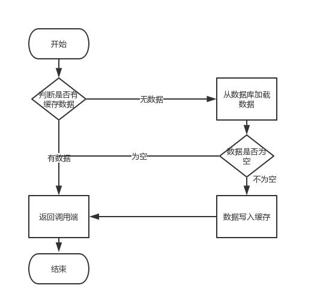
如果涉及到数据更新：数据库和缓存更新，就容易出现缓存和数据库间的数据一致性问题
Cache Aside Pattern
- 失效：应用程序先从cache取数据，没有得到，则从数据库中取数据，成功后放到缓存中
- 命中：应用程序从cache中取数据，取到后返回
- 更新：先把数据存到数据库中，成功后，再让缓存失效
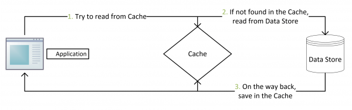 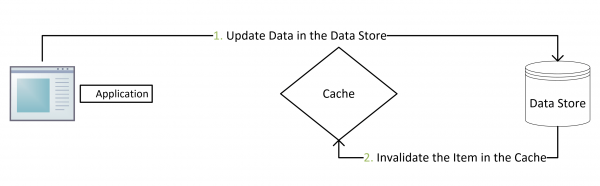
没有了删除cache数据的操作，并发的查询操作拿的是没有更新的数据，但是更新数据库结束后让缓存的失效，后续的查询操作会把数据从数据库中重新拉出来
不使用删除是为了避免两个并发的写操作导致脏数据
脏数据：
- 线程1读，未命中缓存，从数据库取数据1
- 线程2写操作，写完数据库写入缓存2
- 线程1写缓存1覆盖缓存2
但，这个case理论上会出现，不过，实际上出现的概率可能非常低，因为这个条件需要发生在读缓存时缓存失效，而且并发着有一个写操作。而实际上数据库的写操作会比读操作慢得多，而且还要锁表，而读操作必需在写操作前进入数据库操作，而又要晚于写操作更新缓存，所有的这些条件都具备的概率基本并不大。
Read/Write Through Pattern
把更新数据库(Repository)的操作由缓存自己代理了
Read Through
在查询操作中更新缓存。当缓存失效时，Cache Aside 是由调用方负责把数据加载入缓存，Read Through用缓存服务自己加载，从而对应用方是透明的
Write Through
当有数据更新的时候，如果没有命中缓存，直接更新数据库，然后返回。
如果命中了缓存，则更新缓存，然后再由Cache自己更新数据库
memory 为数据库 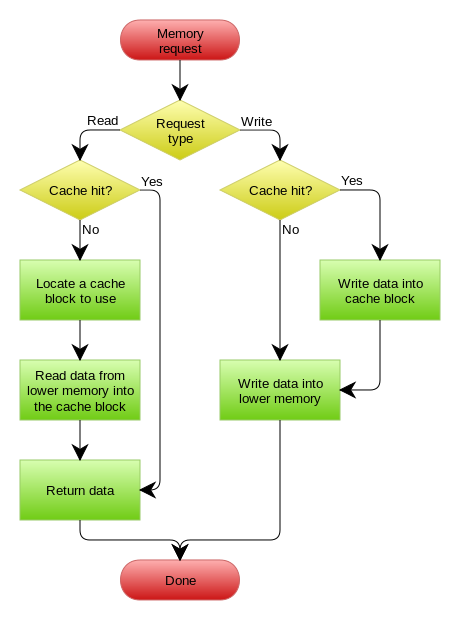
Write Behind Caching Pattern
又叫Write Back。在更新数据的时候，只更新缓存，不更新数据库，缓存异步地批量更新数据库。
数据不是强一致性的，可能会丢失
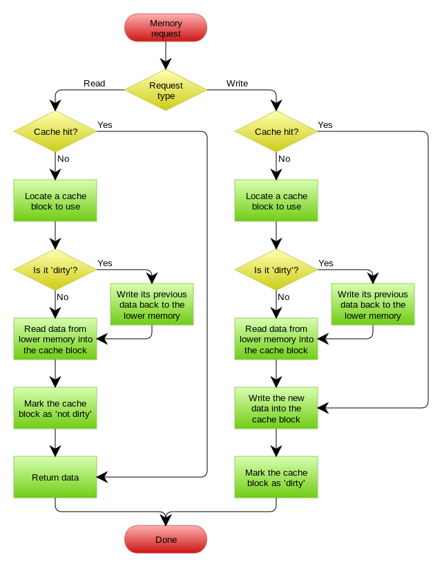